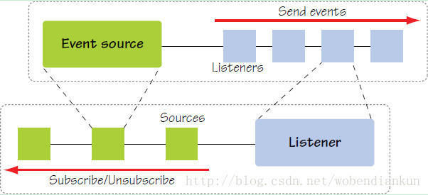
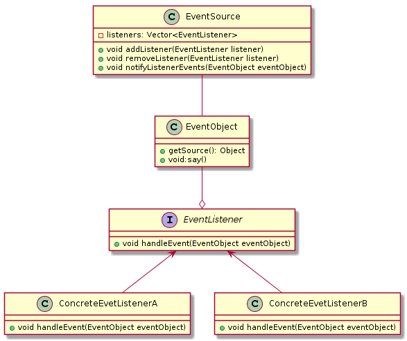

监听器模式
监听器模式其实是观察者模式中的一种，两者都有关于回调的设计。
与观察者模式不同的是，观察者模式中存在的角色为观察者(Observer)和被观察者(Observable)
而监听器模式中存在三种角色
- 事件源(EventSource)
- 事件对象(EventObject)
- 事件监听器(EventListener)
简单的概述就是: 事件源经过事件的封装传给监听器，当事件源触发事件后，监听器接收到事件对象可以回调事件的方法
下面这张图可以很详细解释他们之间的关系

简单的实例
UML
1 2 3 4 5 6 7 8 9 10 11 12 13 14 15 16 17 18 19 20 21 22 23 24 25 26 27 28 29 30 31 32 33
| @startuml class EventSource{ - listeners: Vector<EventListener> + void addListener(EventListener listener) + void removeListener(EventListener listener) + void notifyListenerEvents(EventObject eventObject) } class EventObject{ + getSource(): Object + void:say() } interface EventListener{ + void handleEvent(EventObject eventObject) } class ConcreteEvetListenerA{ + void handleEvent(EventObject eventObject) } class ConcreteEvetListenerB{ + void handleEvent(EventObject eventObject) } EventListener <-- ConcreteEvetListenerA EventListener <-- ConcreteEvetListenerB EventObject --o EventListener EventSource -- EventObject @enduml
|

事件源
1 2 3 4 5 6 7 8 9 10 11 12 13 14 15 16 17 18 19 20 21 22 23 24 25 26 27 28 29 30 31 32
| public class DemoEventSource { public Vector<DemoEventListener> listeners = new Vector<>(); * 注册监听器 * @param listener EventListener */ public void addListener(DemoEventListener listener) { listeners.add(listener); } * 撤销监听器 * @param listener EventListener */ public void removeListener(DemoEventListener listener) { listeners.remove(listener); } * 通知所有监听器,包裹事件源成为事件 * @param eventObject EventObject */ public void notifyListenerEvents(EventObject eventObject){ listeners.forEach(listener ->{ listener.handleEvent(eventObject); }); } }
|
事件对象
1 2 3 4 5 6 7 8 9 10 11 12 13 14 15 16 17 18 19 20
| public class DemoEventObject extends EventObject { * Constructs a prototypical Event. * * @param source The object on which the Event initially occurred. * @throws IllegalArgumentException if source is null. */ public DemoEventObject(Object source) { super(source); } * 事件的回调或者业务逻辑 */ public void say() { System.out.println("this is " + this + " to say"); } }
|
事件监听器
1 2 3 4 5 6 7 8 9 10 11 12 13 14 15 16 17 18 19 20 21 22 23 24 25 26 27 28 29 30 31 32 33 34
| public interface DemoEventListener extends EventListener { * 处理事件 * @param eventObject EventObject */ void handleEvent(EventObject eventObject); } public class ConcreteEventListenerA implements DemoEventListener { @Override public void handleEvent(EventObject eventObject) { System.out.println("ConcreteEventListenerA accept eventObject , eventSource is : " + eventObject.getSource()); if (eventObject instanceof DemoEventObject) { ((DemoEventObject) eventObject).say(); } } } public class ConcreteEventListenerB implements DemoEventListener { @Override public void handleEvent(EventObject eventObject) { System.out.println("ConcreteEventListenerB accept eventObject , eventSource is : " + eventObject.getSource()); if (eventObject instanceof DemoEventObject) { ((DemoEventObject) eventObject).say(); } } }
|
客户端
1 2 3 4 5 6 7 8 9 10 11 12 13 14 15 16 17 18 19
| public class Client { public static void main(String[] args) { DemoEventListener demoEventListenerA = new ConcreteEventListenerA(); DemoEventListener demoEventListenerB = new ConcreteEventListenerB(); DemoEventSource demoEventSource1 = new DemoEventSource(); demoEventSource1.addListener(demoEventListenerA); demoEventSource1.addListener(demoEventListenerB); demoEventSource1.notifyListenerEvents(new DemoEventObject(demoEventSource1)); DemoEventSource demoEventSource2 = new DemoEventSource(); demoEventSource2.addListener(demoEventListenerB); demoEventSource2.notifyListenerEvents(new DemoEventObject(demoEventSource2)); } }
|